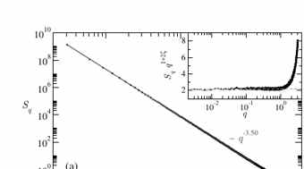

在 depinning，B(r) 和 S(q) 不相等，反而可能是正确答案
Lesson06 曾经要求 real-space 与 Fourier-space roughness estimator 彼此闭合；到了 QEW depinning，这条规则必须改。原因不是“统计不好”，而是 critical interface 属于 super-rough：global roughness exponent 大于 1 时，局域 height difference 的 exponent 会饱和在约 1，而 structure factor 仍携带 global ζ。Lesson10 的任务就是先把这个 estimator physics 锁死，再决定有没有资格谈 ζdep。
0 · 为什么 Lesson06 的“双 estimator 相等”在这里会错？
对普通 self-affine interface，常见关系是：
但 López–Rodríguez–Cuerno 对 anomalous scaling 的分析指出：当 global ζ≥1 时会发生 super-roughening。此时 local roughness 与 global roughness 不再是同一个 exponent；QEW depinning 的经典数值工作也报告 local exponent 约 1、global exponent 约 1.2。
1 · 原论文 critical structure：structure factor 是 global geometry 的主测量


2 · 第一层：故意造一个 ζglobal=1.25 的 interface
先不碰 disorder dynamics。直接在 Fourier space 生成 Gaussian interface，使目标 spectrum 满足：
如果 estimator 实现正确，S(q) 应恢复约 1.25；而小尺度 B(r) 不应被强迫也返回 1.25。
| gold test | 结果 | gate |
|---|---|---|
| target ζglobal | 1.250000 | registered |
| ζ from S(q) | 1.223335 | |ζ−1.25|<0.05 |
| ζ from local B(r), r=2…8 | 0.951442 | 0.85–1.05 |
| global−local split | 0.271893 | >0.15 |
3 · 第二层：critical configuration 的数值安全边界
仍使用 Lessons07–09 的 smooth random-bond-like quenched line，但为了避免 u 方向 periodic disorder table 太窄，本课把 transverse period 扩大，并固定 M/L=16：
| L | M | u-period=M·du | realizations | max wall span / period |
|---|---|---|---|---|
| 128 | 2048 | 512 | 6 | 0.199629 |
| 256 | 4096 | 1024 | 6 | 0.283296 |
moving certificate 也没有为了提速偷缩短：用两个独立 disorder samples 比较“COM 前进 1 个 period”与“2 个 period”，两者 threshold midpoint spread 在当前 bracket 精度下为 0。
4 · 真正的 small-QEW 结果：super-rough signature 通过
| 尺寸 | ζB,local | realization-bootstrap 95% | ζS,global | realization-bootstrap 95% |
|---|---|---|---|---|
| L=128 | 0.928961 | [0.910299, 0.944262] | 1.315621 | [1.060960, 1.480197] |
| L=256 | 0.949576 | [0.916449, 0.966650] | 1.201060 | [1.016524, 1.431058] |
5 · 但 thermodynamic ζ 仍然不能宣布
为了防止只挑 L=128 的 1.316 或 L=256 的 1.201 去说“差不多就是 1.25”，本课在运行前登记一个很简单的 cross-size gate：
| 诊断 | 结果 | 状态 |
|---|---|---|
| local ζB size drift | 0.020615 | 稳定 |
| global ζS size drift | 0.114561 | NOT PASSED |
| S(q) bootstrap width | 仍较宽 | R=6 尚小 |
6 · 这节证明了什么？没证明什么？
已经证明
实现能正确识别 super-rough estimator split；实际 small-QEW critical configuration 的 local B≈1、global S>1；transverse disorder period 与 moving certificate 已做独立安全检查。
还没证明
没有 thermodynamic ζ；没有 ν；没有 finite-size collapse；没有证明 sliding-FE wall 属于 QEW depinning universality class；也没有把 local ζ≈1 当成 global ζ。
7 · 完整脚本、receipt 与 realization table
打开完整 Python 脚本 → 打开 run receipt → 打开 realization CSV →
SYNTHETIC SUPER-ROUGH GOLD TEST = PASS L=128 zeta_B local = 0.928961 L=128 zeta_S global = 1.315621 L=256 zeta_B local = 0.949576 L=256 zeta_S global = 1.201060 cross-size zeta_S drift = 0.114561 SMALL-QEW SUPER-ROUGH SIGNATURE = PASS THERMODYNAMIC ZETA CLOSURE = NOT PASSED FINITE-SIZE SCALING REQUIRED BEFORE UNIVERSAL ZETA CLAIM
8 · 下一课：Lesson11 · finite-size scaling / ν / collapse
现在已经知道问题在哪里：不是 estimator 写错，而是 global geometry 还在明显 size-dependent regime。下一课不再增加新的“漂亮 exponent”，而是建立至少 3 个 L 的 size ladder，检查 sample-dependent fc fluctuations / bias、ζ-informed transverse aspect ratio，并测试有限尺寸标度是否真的能把数据压到同一 scaling description。只有这一步站住，ν 和 collapse 才有资格进入 Paper2。